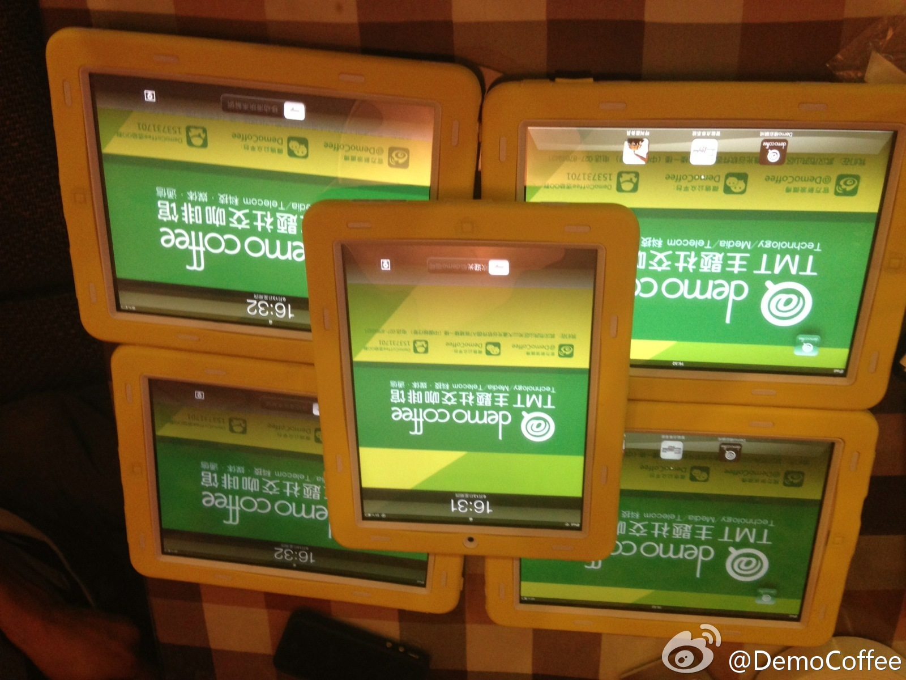
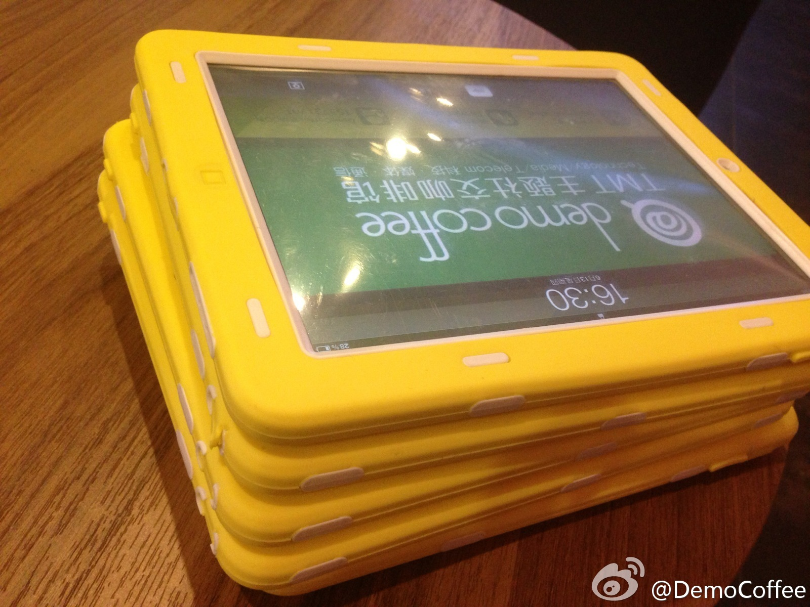
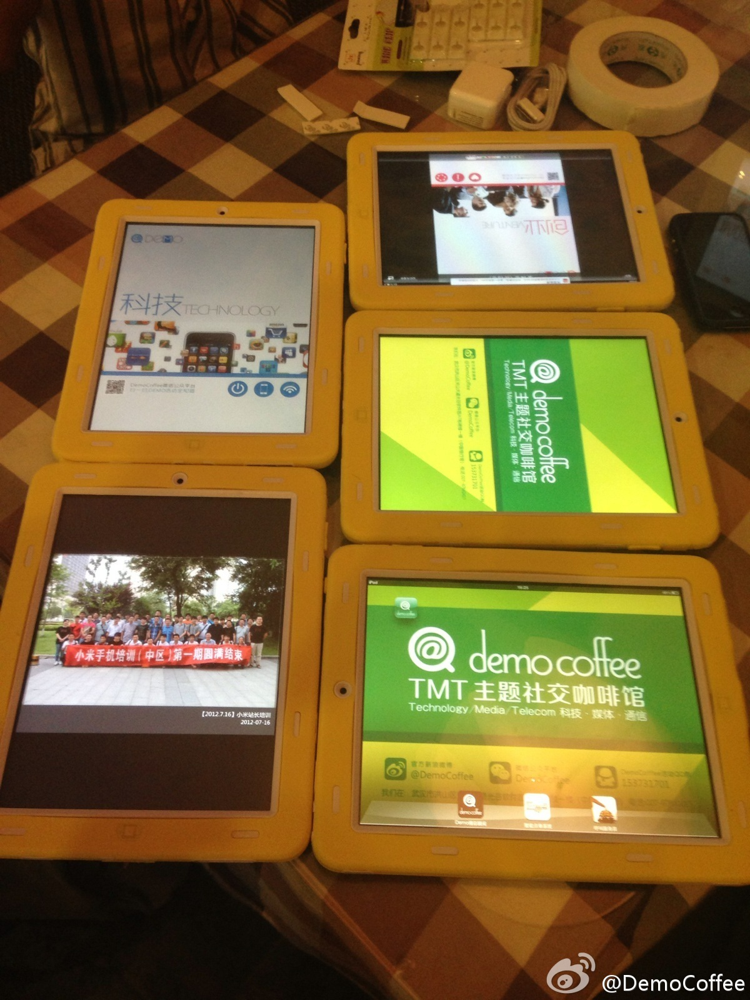
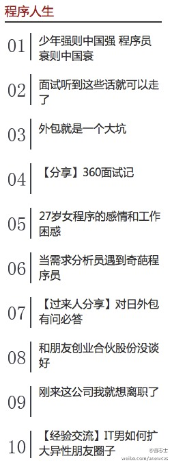

高校学生是积极参与开源的人士。@开源力量:开源力量公开课第20期庆典:#拥抱开源，企业IT自主之路#截止到现在已召集到40位志愿者，感谢复旦大学，上海大学，上海电力大学开源协会的同学大力支持。请大家以热烈的掌声鼓励一下开源协会的同学们。
南京的活动，@CSDN-郭铲铲 看看是否能帮着发布下？//@louiszheng1: 除了上午的精彩主题演讲，下午还安排了技术培训，包括Openstack开发和运营，邀请到国内外Openstack实战专家进行演讲；现场更有@中国开源云联盟 成员单位到场，欢迎OS童鞋们前来参加交流@OpenStack @forestzrd @Ada李力@华胜天成官方微博:由南京市信息协会、南京市信息服务业行业协会、中国计算机学会计算机应用专委会、华胜天成共同主办的“中国云计算产业促进大会暨中国OpenStack服务中心发布”将于6月18日 9:00-17:00 在南京金陵江滨酒店举办，届时政府领导及众国际IT大鳄将共同见证中国首家OpenStack服务中心的正式发布。期待您的莅临
武汉的活动，demo咖啡的环境很不错。@DemoCoffee:Demo新增科技元素：今天开始可以来demo喝咖啡玩ipad，马上将实现Ipad点歺，Demo的app应用，所有活动图片预览，玩各种游戏，还可以体验开发者有趣应用，各位demoer速度围观！cc@Ada李力 @苏菂 @丛真 @湖北互联网联盟 
军功章上有@壹錁泙淉 的一半，还有@弓长女爰 的一半。@曹志士:我觉得：@CSDN 首页最具备吸引力的内容是@CSDN程序人生 模块，理由是：1、有【新新媒体】的气息，不是传统媒体说教的老调调；2、有【贴近生活】的气息，不是装腔作势的摆架子；3、每天更新的十个话题中，必定至少有一个能引起我的共鸣，【十里必一】啊。@Ada李力 @孟迎霞 @刘江总编 @蒋涛CSDN 